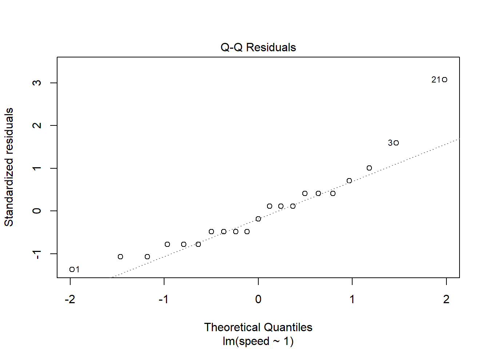

Linear Modeling
Linear model with no predictors (intercept only)
A new reading program is being evaluated at an elementary school. A random sample of 20 students were tested to determine reading speed. Speed was measured in minutes. (Ott and Longnecker 2004)
speed <- c(5, 7, 15, 12, 8, 7, 10, 11, 9, 13, 10, 6, 11, 8, 10, 8, 7, 6, 11, 8, 20)Visualize distribution of data:
hist(speed)
Find the mean of speed and a 95% confidence interval on the mean.
t.test(speed)##
## One Sample t-test
##
## data: speed
## t = 12.753, df = 20, p-value = 4.606e-11
## alternative hypothesis: true mean is not equal to 0
## 95 percent confidence interval:
## 8.045653 11.192442
## sample estimates:
## mean of x
## 9.619048To get just the confidence interval:
tout <- t.test(speed)
tout$conf.int## [1] 8.045653 11.192442
## attr(,"conf.level")
## [1] 0.95This can also be found using an intercept-only linear model:
m <- lm(speed ~ 1)
confint(m)## 2.5 % 97.5 %
## (Intercept) 8.045653 11.19244Does the sample appear to be from a Normal distribution?
qqnorm(speed)
qqline(speed)
Using the model output:
plot(m, which = 2)
A couple of observations seem unusual: 1, 3, 21
speed[c(1, 3, 21)]## [1] 5 15 20There was a fast reader and a couple of slower readers.
Linear model with categorical predictors
The schooldays data frame from the HSAUR3 package has
154 rows and 5 columns. It contains data from a sociological study of
Australian Aboriginal and white children. Model absent
(number of days absent during school year) as a function of
race, gender, school (school
type), and learner (average or slow learner). (Hothorn and Everitt 2022)
library(HSAUR3)
data("schooldays")Linear model with categorical and numeric predictors
The bp.obese data frame from the ISwR package has 102
rows and 3 columns. It contains data from a random sample of
Mexican-American adults in a small California town. Analyze blood
pressure (bp) as a function of obesity (obese)
and gender (sex). Here obese is a ratio of
actual weight to ideal weight from New York Metropolitan Life Tables.
(Dalgaard 2020)
library(ISwR)
data("bp.obese")